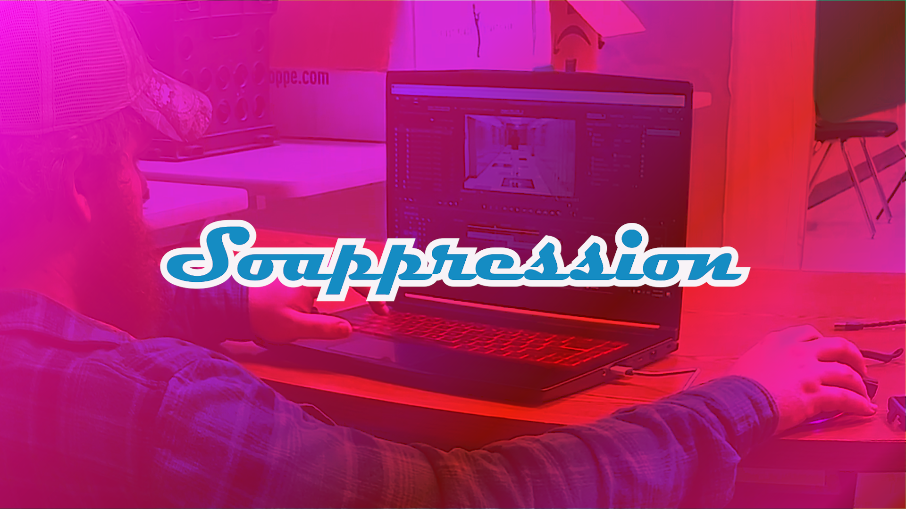

My name is Justin Poplin and I edit funny little goofy videos in my free time! I graduated top five of my class in high school, but after realising that I enjoyed working more than I enjoyed school, I opted to go to work. I work at a meat packing plant and though my free time is a little limited I try my best to make the most of it. I actually do a lot of stuff in my free time, I enjoy working on my truck, hanging out and shooting the breeze, and creating and editing videos.
About Me

Branding
Soappression started after many years of bouncing between usernames and internet handles. I was still running with the username "killsteeler12804" when I created the intagram account "Bar O' Soap" back in 2017. This instagram account was used to post daily pictures of soap and tell people to take a bath becuase they stunk. I never used "Bar O' Soap" as a handle until after 2022 when I really got back into recording and editing. I started a youtube channel under the name in late 2022 and posted a few videos before it got leaked and a few too many people from school found out about it. Naturally, I unlisted every video and stepped away for a bit before I could get picked on too much becuase of it. In 2024 I was once again trying to rebrand and start uploading again, but couldn't settle on a name. I rolled a few names around and settled on "Psycho Suppression" which I thought sounded pretty cool. The only issue I found was that the name was already taken and outside of spelling it wrong, there was no way to deal with that. I ended up going through all my old accounts looking for anything to base the name on and that's when it clicked "soap" "pression", "Soappression". The name means absolutely nothing, but I like to tell people it means something different everytime they ask.